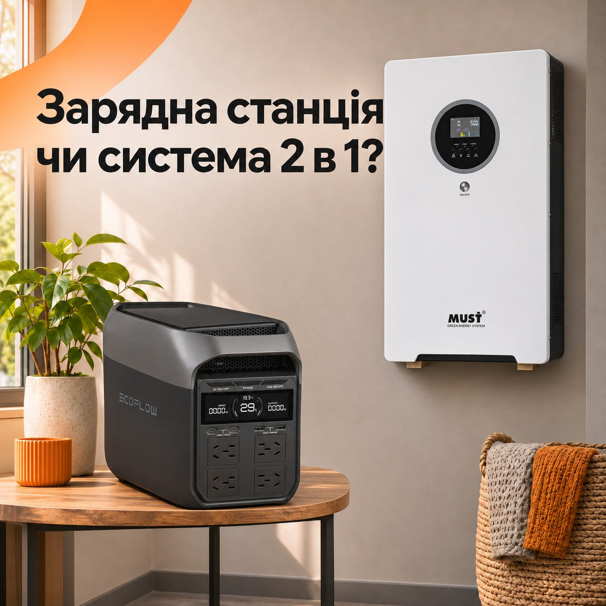

Зарядна станція чи система 2 в 1: чи є між ними різниця
Чим зарядна станція відрізняється від системи 2 в 1: вага, підключення техніки, потужність, запас енергії та як обрати пристрій під свої потреби.
Коли обираєш резервне живлення, серед варіантів можна зустріти і зарядні станції, і системи 2 в 1. В обох акумулятор та інвертор уже поєднані в одному корпусі. Одні пристрої зручно переносити між кімнатами або брати із собою, інші краще підходять для постійного встановлення вдома. Відрізняються вони також способом підключення техніки, потужністю та запасом енергії. З'ясуємо, що стоїть за цими назвами та як обрати пристрій для своїх потреб.
Чому їх легко сплутати
Назва «2 в 1» насамперед описує конструкцію пристрою, а «зарядна станція» зазвичай вказує на його переносний формат. При цьому назви можуть перетинатися, тому за ними не завжди зрозуміло, що вміє конкретна модель.
Зарядні станції зазвичай мають розетки та USB-порти, до яких можна одразу підключити техніку. Серед систем 2 в 1 також є моделі з розетками. Інші призначені для стаціонарного встановлення та підключення до домашніх ліній живлення за допомогою електрика.
Відрізняються й додаткові можливості. Деякі пристрої автоматично переходять на живлення від акумулятора, підтримують сонячні панелі або підключення додаткової батареї. Усе це залежить від конкретної моделі, тому перед покупкою варто перевірити не лише назву, а й характеристики та спосіб підключення.
Ручка на корпусі ще не означає легку прогулянку
Вага пристрою стає особливо важливою, коли його потрібно регулярно переносити. Наприклад, EcoFlow DELTA 3 важить близько 12,5 кг. Її можна переставити ближче до робочого місця або взяти із собою на дачу, хоча щодня носити таку станцію буде зручно не всім.
Для постійного резервного живлення вдома можна розглянути систему 2 в 1 MUST HBP19-5548 VPM. Вона має більший запас енергії, але й важить 58 кг. Її можна встановити на підлозі або закріпити на стіні, тому місце для неї краще продумати заздалегідь.
Окремі прилади та звичні розетки вдома
Щоб облаштувати робоче місце під час відключення, зарядну станцію достатньо поставити поруч і підключити до неї ноутбук, монітор та лампу. Головне, щоб на ній вистачило відповідних розеток і портів, а їхня потужність підходила для вашої техніки.
Складніше, коли резервне живлення потрібне одразу в кількох кімнатах. Наприклад, холодильник залишається на кухні, роутер у передпокої, а освітлення потрібне по всій квартирі. Щоб не прокладати подовжувачі між кімнатами, можна організувати живлення окремих домашніх ліній. Для цього потрібен пристрій, який підтримує таке підключення, а схему та захист має підібрати електрик. Підключати резервне джерело до домашньої розетки кабелем із двома вилками небезпечно.
Має значення і те, як швидко пристрій переходить на живлення від акумулятора. Деякі зарядні станції та системи 2 в 1 перемикаються автоматично, але між зникненням світла і подачею живлення є коротка пауза. Для ноутбука з власною батареєю вона зазвичай непомітна, а от настільний комп'ютер може перезавантажуватись. Тому для такої техніки перед покупкою варто перевірити час перемикання та сумісність із пристроєм.
Більший корпус має сенс за відповідного навантаження
На прикладі двох моделей добре видно, наскільки різними можуть бути можливості пристроїв. EcoFlow DELTA 3 має потужність 1800 Вт і запас енергії 1024 Вт·год. У MUST HBP19-5548 VPM ці показники становлять 5,5 кВт і 5120 Вт·год. Така різниця означає, що вони розраховані на різні потреби, але не робить одну з категорій потужнішою за іншу. Зарядні станції та системи 2 в 1 бувають із різними характеристиками.
Для роботи ноутбука, роутера й кількох ламп може вистачити компактної станції. Якщо ж потрібно живити більше приладів або мати запас енергії на довший час, варто розглянути ємніші моделі. Головне - зіставити потужність пристрою зі споживанням техніки, а запас батареї - з бажаним часом роботи.
Що залишиться зручним через рік
З часом потреби можуть змінитися. Спочатку резервне живлення потрібне для ноутбука й роутера, а потім хочеться підключити ще й телевізор або іншу техніку. Якщо плануєте збільшувати запас енергії, перевірте цю можливість ще до покупки. Деякі зарядні станції та системи 2 в 1 підтримують додаткові акумулятори, але для цього потрібна сумісна батарея.
Заряджання від сонячних панелей також доступне в обох категоріях. Проте панелі потрібно підбирати під конкретну модель, зважаючи на допустиму напругу, струм і потужність. Те, що підходить для одного пристрою, може не підійти для іншого.
У повсякденному користуванні мають значення й деталі, про які легко забути під час вибору. Наприклад, чи вистачить розеток для потрібної техніки та чи не заважатиме шум вентилятора поруч із робочим столом. А ще варто звернути увагу на тип розеток. У згаданої вище EcoFlow DELTA 3 вони китайського стандарту, тому в комплекті є два перехідники для європейських вилок.
Перед покупкою уявіть, де стоятиме пристрій і що до нього буде підключено. Так легше зрозуміти, чи потрібна вам станція, яку можна перенести в іншу кімнату, чи система для постійного живлення вибраних ліній удома.